Free-Public-Tools
Free tools and knowledge about working with AI, one at a time. Copy any tool in one tap, or explore everything on GitHub.
How I test themTools up against plain prompts, on questions from my own projects, across several AI models. Answer keys written before the runs, replies marked without names, every mark published.
Free-Public-LessonsFree AI lessons every week.
Start here
More tools, newest first
-
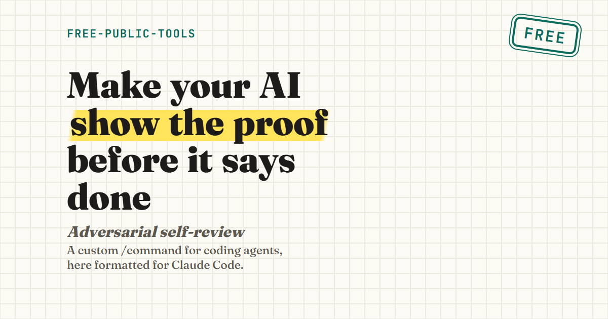
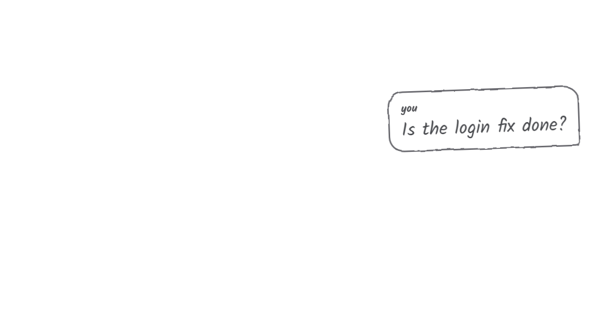
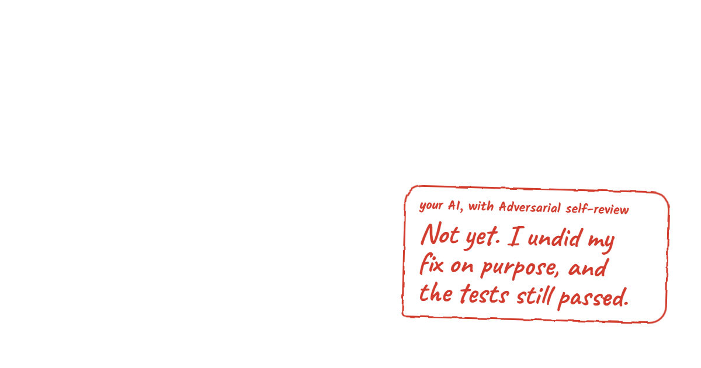
-
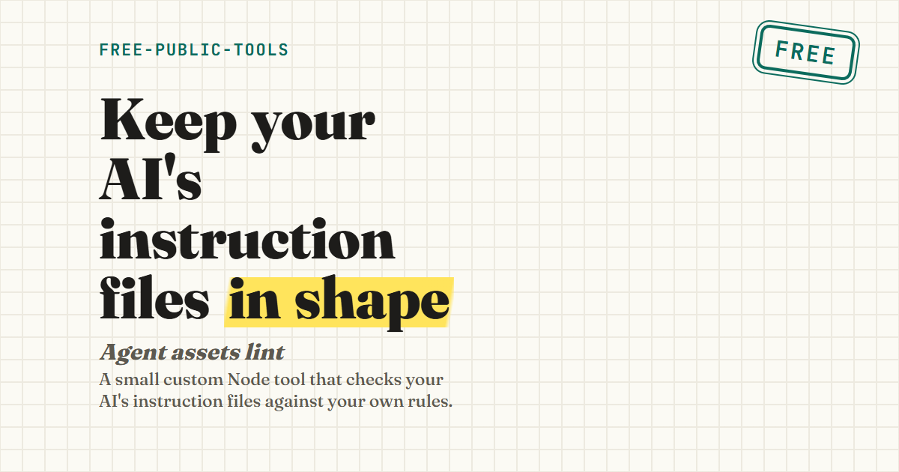
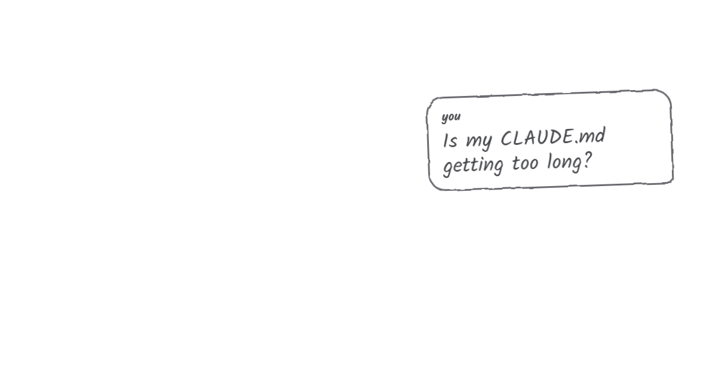
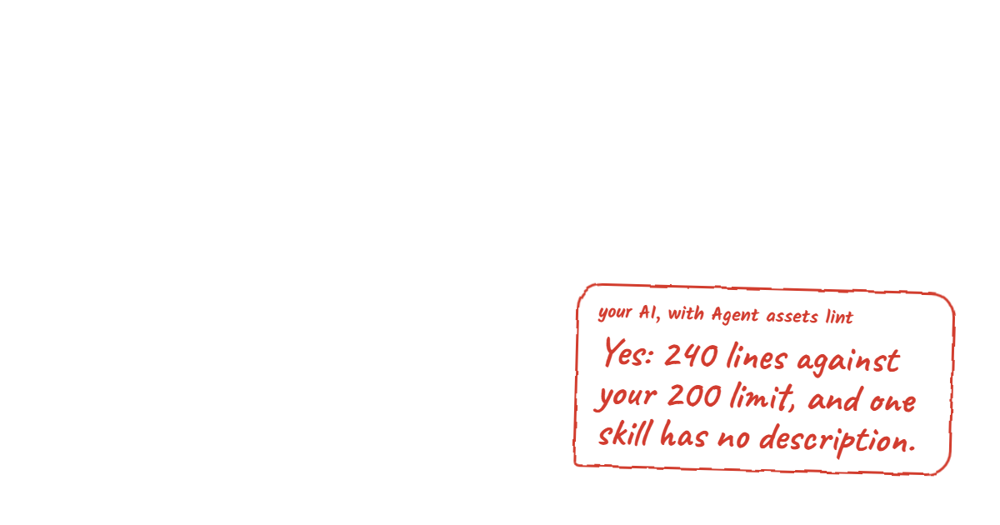
-
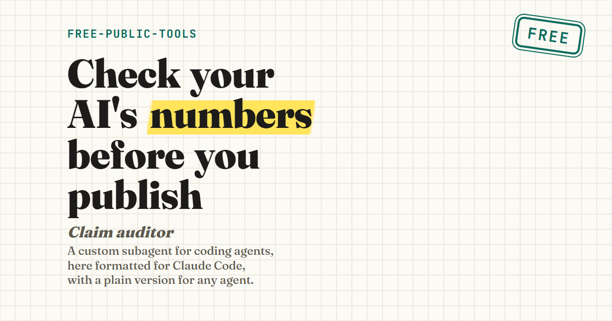
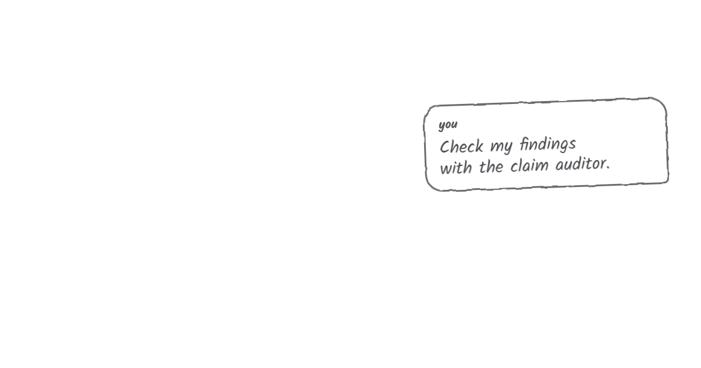
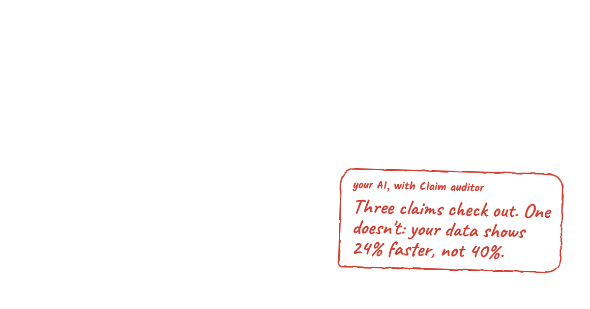
-
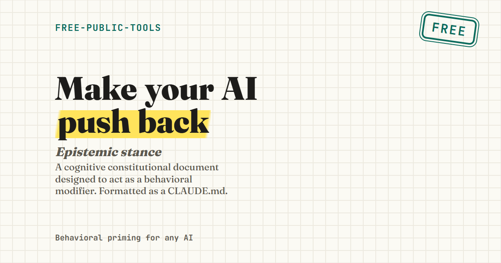
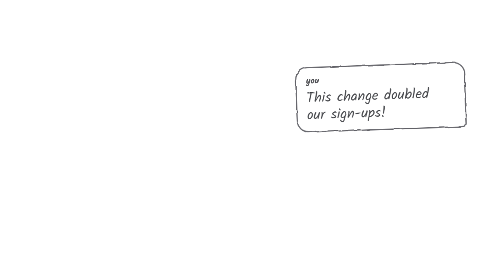
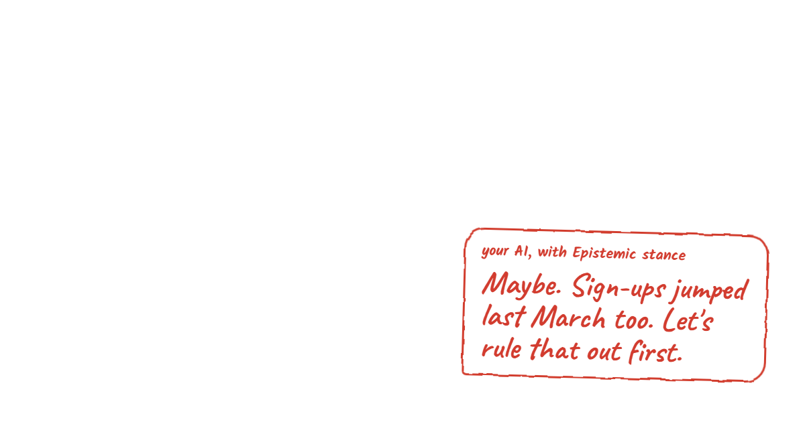
Tools linked from research projects
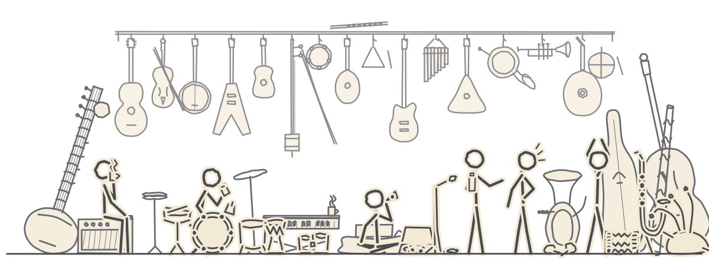